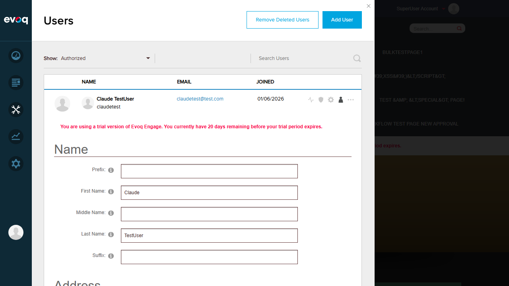
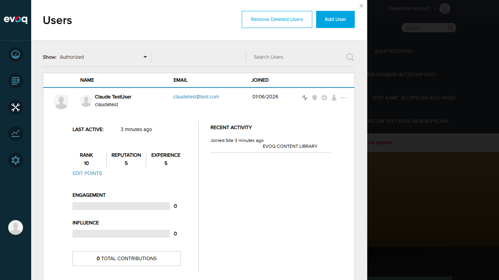
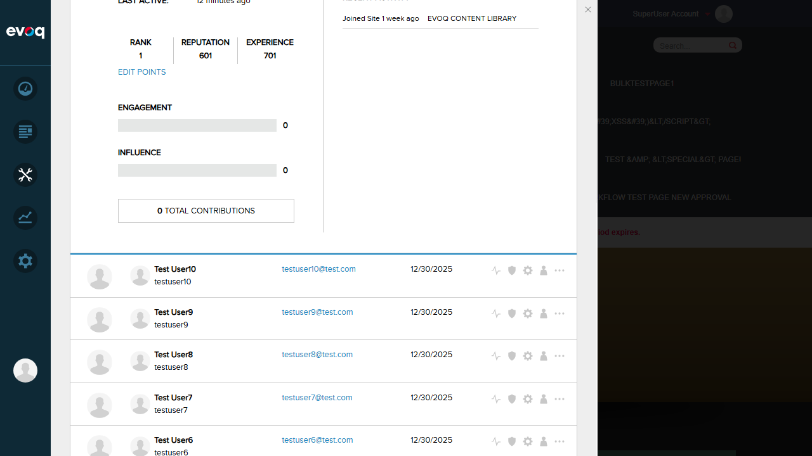

Test 1: RETRIEVED_USER_ACTIVITY_DETAILS Updates State
PASS
Objective: Verify that when user activity is loaded, the Redux action RETRIEVED_USER_ACTIVITY_DETAILS properly updates the state and triggers a component re-render displaying the activity data.
Step 1: Navigate to Admin > Users panel
Step 2: Click on "User Activity" icon for a user (Claude TestUser)
Step 3: Observe that activity data loads and displays
Evidence of Redux State Management Working:
- User activity data successfully fetched from server
- State updated with: Last Active, Rank (10), Reputation (5), Experience (5)
- Engagement, Influence, and Total Contributions displayed (all 0)
- Recent Activity section populated: "Joined Site 3 minutes ago"
Relevant Code (userActivity.js reducer):
case ActionTypes.RETRIEVED_USER_ACTIVITY_DETAILS: {
return { ...state, userActivityDetails: action.payload };
}

User Activity panel showing Claude TestUser's activity data (Rank: 10, Reputation: 5, Experience: 5)
Test 2: State Persistence During Tab Switches
PASS
Objective: Verify that user activity data persists in Redux state when switching between tabs (User Activity -> Profile Settings -> User Activity).
Step 1: View Claude TestUser's Activity (Rank: 10, Rep: 5, Exp: 5)
Step 2: Switch to "Profile Settings" tab
Step 3: Switch back to "User Activity" tab
Step 4: Verify the same activity data is still displayed
Evidence of State Persistence:
- Activity data (Rank: 10, Reputation: 5, Experience: 5) persisted after tab switch
- Recent Activity section still showed "Joined Site 3 minutes ago"
- No data loss or re-fetching needed on tab return

Profile Settings tab showing Claude TestUser's profile form (First Name: Claude, Last Name: TestUser)

User Activity tab after returning - same data persisted (Rank: 10, Reputation: 5, Experience: 5)
Test 3: State Cleanup on User Change
PASS
Objective: Verify that when switching to a different user's activity, the Redux state is properly updated with the new user's data (state cleanup/replacement).
Step 1: View Claude TestUser's Activity (Rank: 10, Rep: 5, Exp: 5)
Step 2: Click on "User Activity" for Test User123
Step 3: Verify that completely different activity data is displayed
Evidence of State Update on User Change:
| Attribute |
Claude TestUser |
Test User123 |
| Last Active |
3 minutes ago |
12 minutes ago |
| Rank |
10 |
1 |
| Reputation |
5 |
601 |
| Experience |
5 |
701 |
| Recent Activity |
Joined Site 3 minutes ago |
Joined Site 1 week ago |

Test User123's activity showing completely different data (Rank: 1, Reputation: 601, Experience: 701)
Conclusion
All smoke tests for the User Activity Redux State Management feature PASSED. The Redux implementation correctly:
- Updates state when user activity data is retrieved
- Persists state across tab switches within the same user context
- Replaces state with new data when switching between different users
The feature functions as designed and the Redux state management layer operates correctly.